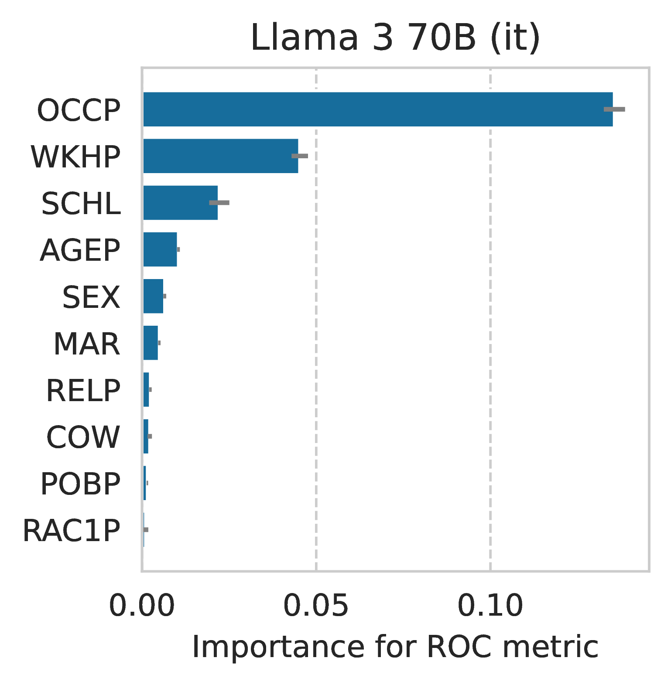

README.md
:book: folktexts


This package is accompanied by a paper titled “Evaluating language models as risk scores”
Folktexts is a python package to evaluate statistical properties of LLMs as classifiers. It enables computing and evaluating classification risk scores for tabular prediction tasks using LLMs.
Several benchmark tasks are provided based on data from the American Community Survey. Namely, each prediction task from the popular folktables package is made available as a natural-language prompting task.
Package documentation can be found here.
Table of contents:
Installing
Install package from PyPI:
pip install folktexts
Basic setup
You’ll need to go through these steps to run the benchmark tasks.
Create conda environment
conda create -n folktexts python=3.11
conda activate folktexts
Install folktexts package
pip install folktexts
Create models dataset and results folder
mkdir results
mkdir models
mkdir data
Download transformers model and tokenizer
download_models --model 'google/gemma-2b' --save-dir models
Run benchmark on a given task
run_acs_benchmark --results-dir results --data-dir data --task 'ACSIncome' --model models/google--gemma-2b
Run run_acs_benchmark --help to get a list of all available benchmark flags.
Example usage
from folktexts.llm_utils import load_model_tokenizer
model, tokenizer = load_model_tokenizer("gpt2") # using tiny model as an example
from folktexts.acs import ACSDataset
acs_task_name = "ACSIncome" # Name of the benchmark ACS task to use
# Create an object that classifies data using an LLM
from folktexts import LLMClassifier
clf = LLMClassifier(
model=model,
tokenizer=tokenizer,
task=acs_task_name,
)
# Use a dataset or feed in your own data
dataset = ACSDataset.make_from_task(acs_task_name) # use `.subsample(0.01)` to get faster approximate results
# And simply run the benchmark to get a variety of metrics and plots
from folktexts.benchmark import Benchmark
benchmark_results = Benchmark(clf, dataset).run(results_root_dir=".")
# You can compute the risk score predictions for the whole dataset
y_scores = clf.predict_proba(dataset)
# And, optionally, you can fit the threshold based on a small portion of the data
clf.fit(*dataset[0:100])
# ...in order to get more accurate binary predictions with `.predict`
clf.predict(dataset)
Evaluating feature importance
By evaluating LLMs on tabular classification tasks, we can use standard feature importance methods to assess which features the model uses to compute risk scores.
You can do so yourself by calling folktexts.cli.eval_feature_importance (add --help for a full list of options).
Here’s an example for the Llama3-70B-Instruct model on the ACSIncome task (warning: takes 24h on an Nvidia H100):
python -m folktexts.cli.eval_feature_importance --model 'meta-llama/Meta-Llama-3-70B-Instruct' --task ACSIncome --subsampling 0.1

This script uses sklearn’s permutation_importance to assess which features contribute the most for the ROC AUC metric (other metrics can be assessed using the --scorer [scorer] parameter).
Benchmark options
usage: run_acs_benchmark [-h] --model MODEL --task-name TASK_NAME --results-dir RESULTS_DIR --data-dir DATA_DIR [--few-shot FEW_SHOT] [--batch-size BATCH_SIZE] [--context-size CONTEXT_SIZE] [--fit-threshold FIT_THRESHOLD] [--subsampling SUBSAMPLING] [--seed SEED] [--dont-correct-order-bias] [--chat-prompt] [--direct-risk-prompting] [--reuse-few-shot-examples] [--use-feature-subset [USE_FEATURE_SUBSET ...]]
[--use-population-filter [USE_POPULATION_FILTER ...]] [--logger-level {DEBUG,INFO,WARNING,ERROR,CRITICAL}]
Run an LLM as a classifier experiment.
options:
-h, --help show this help message and exit
--model MODEL [str] Model name or path to model saved on disk
--task-name TASK_NAME
[str] Name of the ACS task to run the experiment on
--results-dir RESULTS_DIR
[str] Directory under which this experiment's results will be saved
--data-dir DATA_DIR [str] Root folder to find datasets on
--few-shot FEW_SHOT [int] Use few-shot prompting with the given number of shots
--batch-size BATCH_SIZE
[int] The batch size to use for inference
--context-size CONTEXT_SIZE
[int] The maximum context size when prompting the LLM
--fit-threshold FIT_THRESHOLD
[int] Whether to fit the prediction threshold, and on how many samples
--subsampling SUBSAMPLING
[float] Which fraction of the dataset to use (if omitted will use all data)
--seed SEED [int] Random seed -- to set for reproducibility
--dont-correct-order-bias
[bool] Whether to avoid correcting ordering bias, by default will correct it
--chat-prompt [bool] Whether to use chat-based prompting (for instruct models)
--direct-risk-prompting
[bool] Whether to directly prompt for risk-estimates instead of multiple-choice Q&A
--reuse-few-shot-examples
[bool] Whether to reuse the same samples for few-shot prompting (or sample new ones every time)
--use-feature-subset [USE_FEATURE_SUBSET ...]
[str] Optional subset of features to use for prediction
--use-population-filter [USE_POPULATION_FILTER ...]
[str] Optional population filter for this benchmark; must follow the format 'column_name=value' to filter the dataset by a specific value.
--logger-level {DEBUG,INFO,WARNING,ERROR,CRITICAL}
[str] The logging level to use for the experiment
Citation
@misc{cruz2024evaluating,
title={Evaluating language models as risk scores},
author={Andr\'{e} F. Cruz and Moritz Hardt and Celestine Mendler-Dünner},
year={2024},
eprint={2407.14614},
archivePrefix={arXiv},
primaryClass={cs.LG}
}
License and terms of use
Code licensed under the MIT license.
The American Community Survey (ACS) Public Use Microdata Sample (PUMS) is governed by the U.S. Census Bureau terms of service.